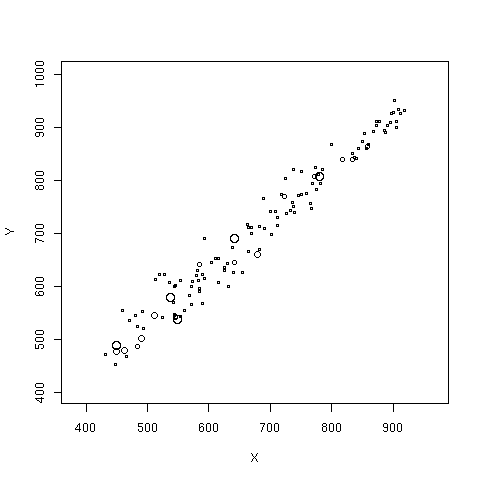
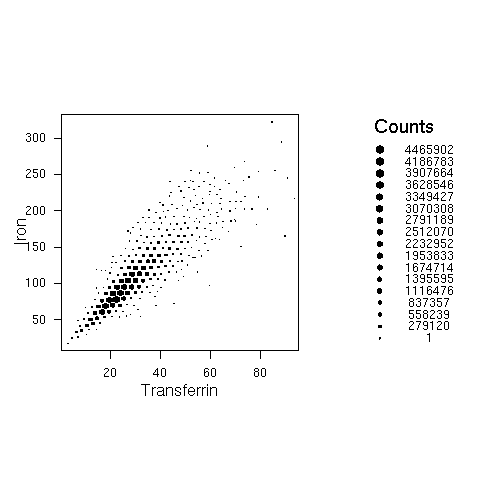
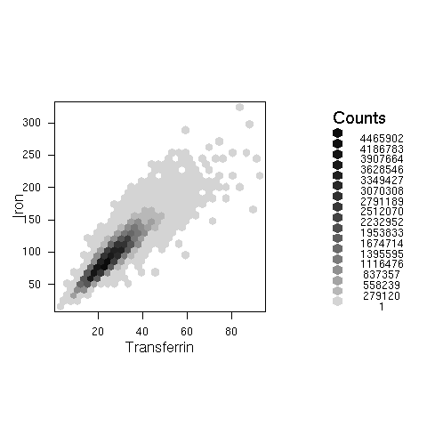
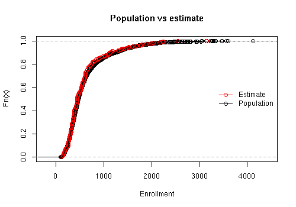
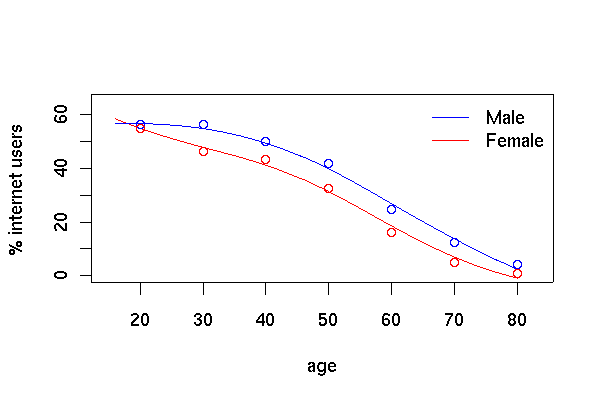

The first approach produces the "bubble plot". Here we show the relationship between the 2000 and 1999 API scores for a two-stage cluster sample of California schools. The radius of the bubble for each school is proportional to the sampling weight.
data(api) dclus2<-svydesign(id=~dnum+snum, fpc=~fpc1+fpc2, data=apiclus2) svyplot(api00~api99, dclus2)
The second strategy is used by the hexagonal binning plots and survey-weighted histograms. Hexagonal binning plots divide the screen on a hexagonal grid and show the number of points falling in each hexagon. The survey-weighted hexbin plot shows estimated population numbers in each cell. It requires the "hexbin" package from Bioconductor.
This example uses data from NHANES 2, and shows the estimated relationship between serum iron and serum transferrin in the US population
svyplot(iron~trnsfern,style="hex",dhanes,xlab="Transferrin",ylab="Iron",legend=2) svyplot(iron~trnsfern,style="grayhex",dhanes,xlab="Transferrin",ylab="Iron",legend=2)
Another example uses the API data and compares the estimated cumulative distribution to the known population cumulative distribution
data(api)
dstrat <- svydesign(id = ~1, strata = ~stype, weights = ~pw, data = apistrat, fpc = ~fpc)
cdf.est<-svycdf(~enroll+api00+api99, dstrat)
cdf.pop<-ecdf(apipop$enroll)
plot(cdf.pop, main="Population vs estimate",xlab="Enrollment")
lines(cdf.est[[1]],col.points="red")
legend("right",col=c("red","black"),pch=1, legend=c("Estimate","Population"),bty="n",lty=1)

Smoothing
This example uses data from PEAS Examplar 2, which examines internet use in Scotland from the Scottish Household Survey.
load("ex2.RData")
shs.des <- svydesign(id=~PSU, weights=~GROSSWT,strata=~STRATUM,data=shs)
plot(c(15,83),c(0,65),type='n',xlab='age',ylab='% internet users')
legend("topright",lty=c(1,1),col=c("blue","red"),legend=c("Male","Female"),bty="n")
lf<-svysmooth(I(100*INTUSE)~AGE,subset(shs.des,SEX=="female" & !is.na(AGE)),bandwidth=10)
lines(lf,col="red")
lm<-svysmooth(I(100*INTUSE)~AGE,subset(shs.des,SEX=="male" & !is.na(AGE)),bandwidth=10)
lines(lm, col="blue")
shs.des <- update(shs.des, agegp=cut(AGE, c(0,25,35,45,55,66,75,Inf)))
means<-svyby(~INTUSE,~agegp+SEX,svymean,design=shs.des, na.rm=TRUE)
points((2:8)*10, means[1:7,3]*100,col="blue")
points((2:8)*10, means[7+1:7,3]*100,col="red")
The graph of internet use by age and sex looks like the one in the
PEAS examplar, but using svysmooth makes it much easier
to produce